The Ocean Is Deeper Than You Think
As you scroll down, your mind will be BLOWN
The ocean covers over 70% of our planet, yet around 95% of it remains unexplored.
As you scroll down, you will travel deeper through the major ocean zones,
learning what lies down these deep and dark depths.
Before you explore, here are the different zones of the ocean as you descend:
- Epipelagic (Sunlight Zone)
- Mesopelagic (Twilight Zone)
- Bathypelagic (Midnight Zone)
- Abyssopelagic (Abyssal Zone)
- Hadal (Trench Zone)
Below is quick reference table of what the different zones of the ocean are like:
| Ocean Zone |
Depth Range |
Water Pressure |
| Epipelagic |
0-200 m |
14.7-309 psi |
| Mesopelagic |
200-1,000 m |
300-1500 psi |
| Bathypelagic |
1,000-4,000 m |
1470-5850 psi |
| Abyssopelagic |
4,000-6,000 m |
4000-11,000 psi |
| Hadal |
6,000+ m |
16,000 psi |
Now relax and enjoy our journey through the depths of our ocean floor

Wanna learn more about the ocean? CLICK HERE:
The Ocean is Way Deeper Than You Think
Our Planet | Coastal Seas | FULL EPISODE | Netflix
Epipelagic Zone — 0–200 m
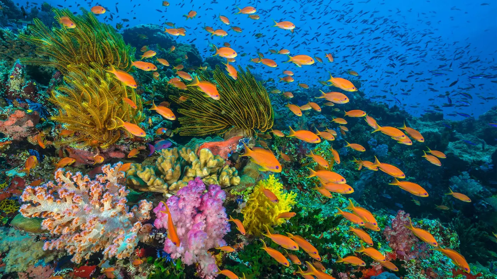


This bright, warm region supports most marine life, such as dolphins, coral reefs, sea turtles, and schools of fish
Mesopelagic Zone — 200–1,000 m
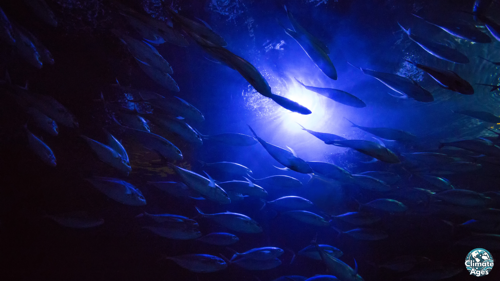
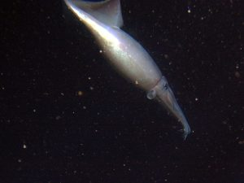
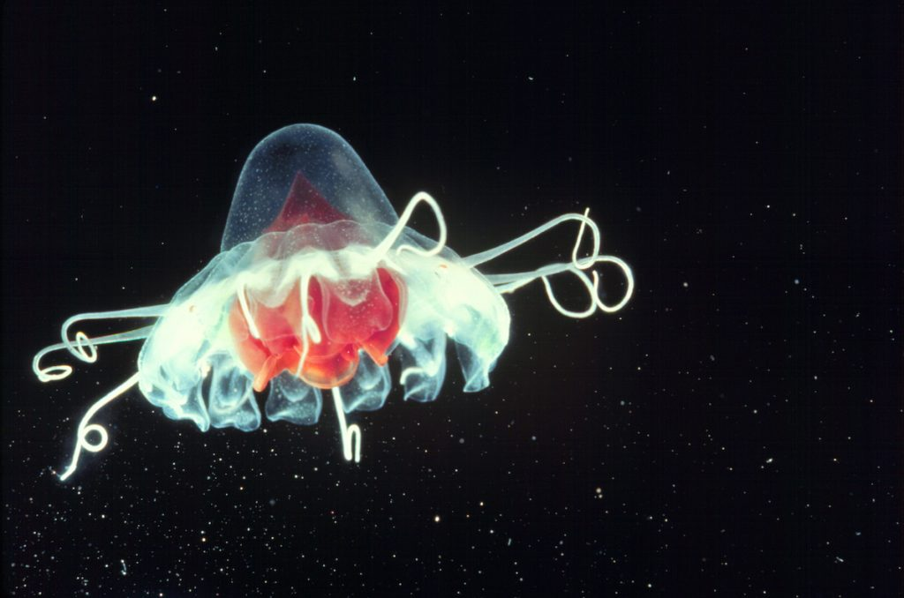
Light fades quickly here, and many creatures glow with bioluminescence, such as lanternfish, squid, and jellyfish
Bathypelagic Zone — 1,000–4,000 m

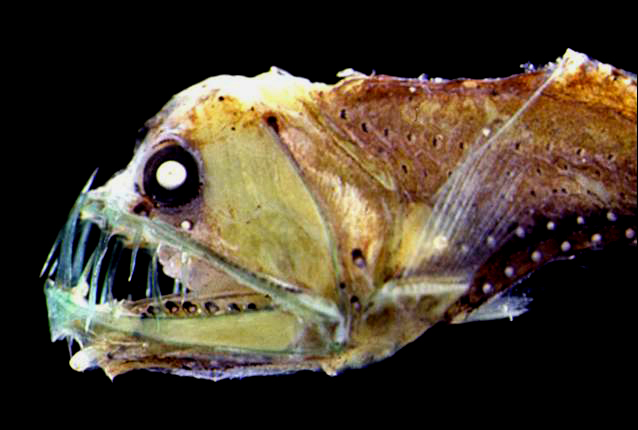
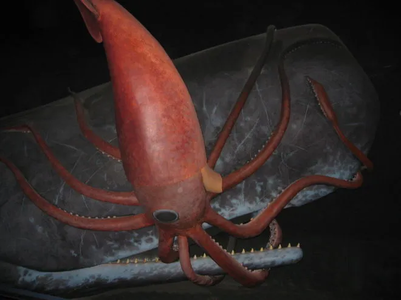
This zone is pitch-black, freezing, and under immense pressure. Marine snow falling from above is a major food source
You will find strange, alien like animals down here, such as the anglerfish and viperfish
Giant squids and sperm whales battle down this depth as well
Abyssopelagic Zone — 4,000–6,000 m

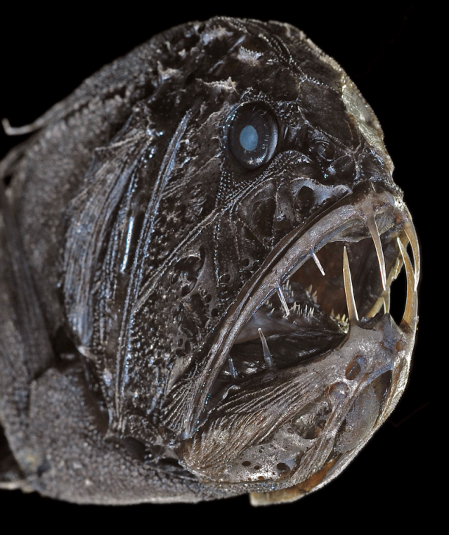
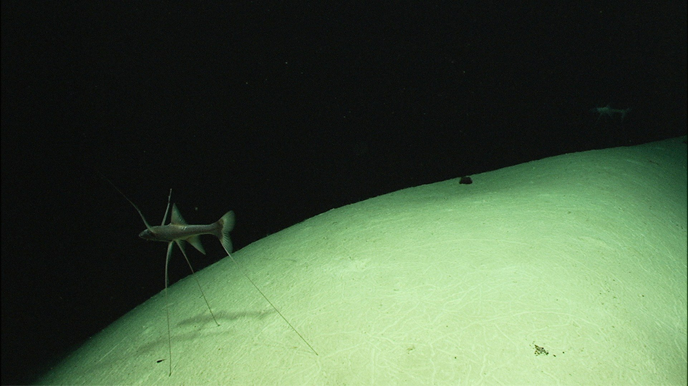
Sunlight is completely absent here, with extremely freezing temperatures
It is home to slow-metabolizing organisms who adapted to this environment which are bioluminescent, such as the dragonfish, fangtooth, and tripod fish
Hadal Zone — 6,000+ m
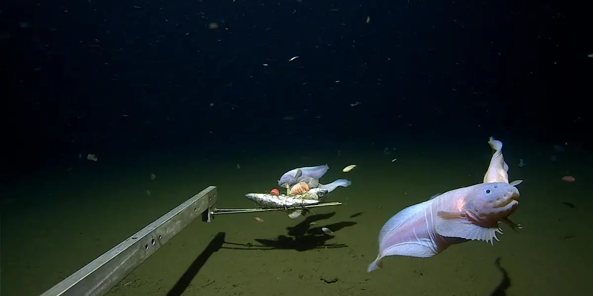
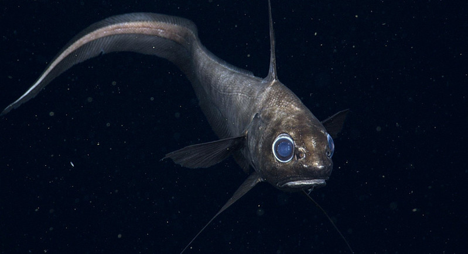
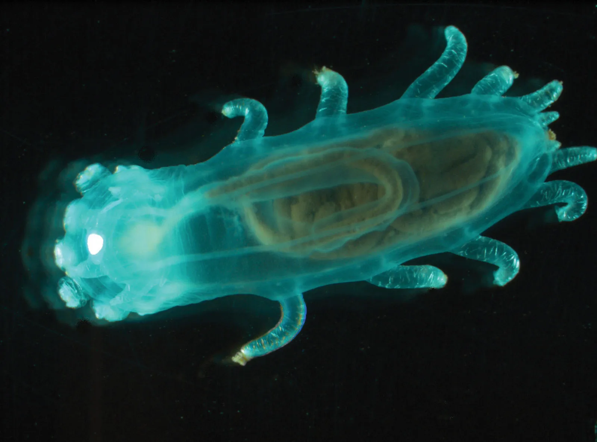
Named after the underworld Hades itself
Located inside deep ocean trenches, this is the most extreme region on Earth. Very few animals can survive the crushing pressure.
Despite this, life manages to thrive, with animals such as the snailfish, rat-tails, and sea cucumbers living here
Deep-Sea Vehicle
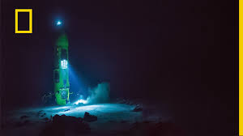


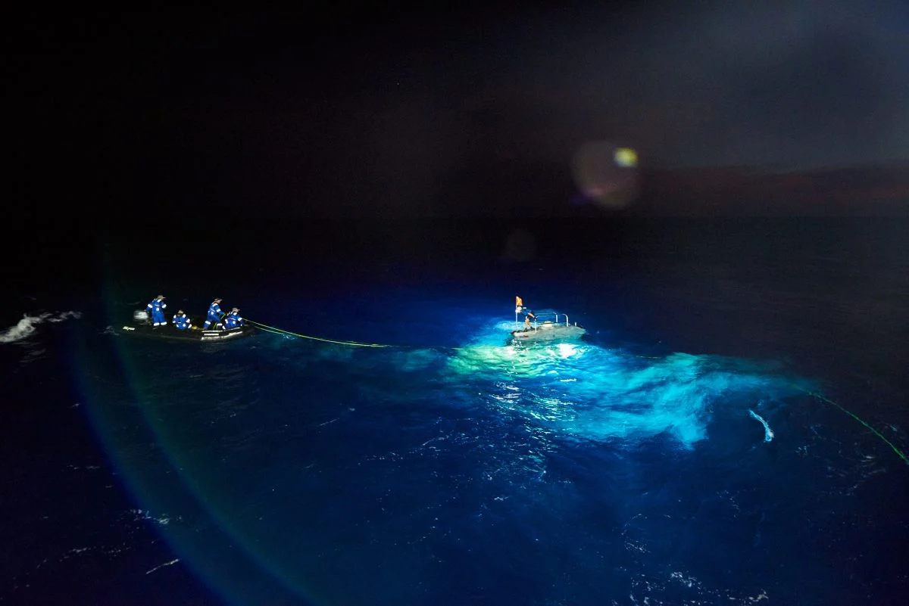
Only specialized research submarines can reach these depths safely
These depths have only been explored using the BEST submarines to exist
This also marks the deepest point of the ocean, the Mariana Trench, that we know CURRENTLY
 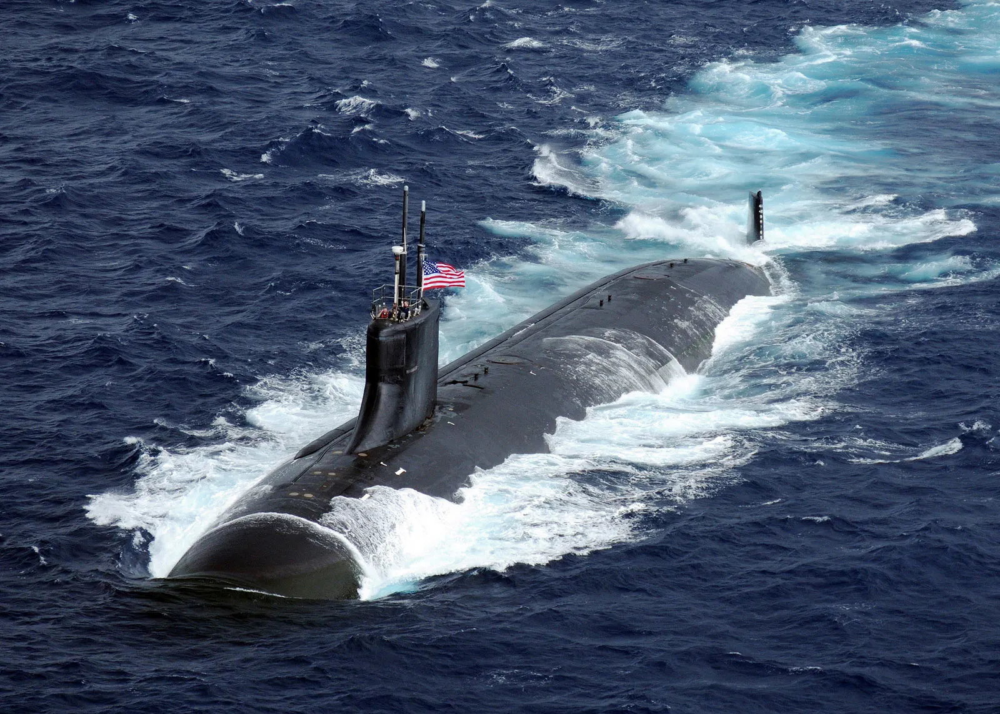
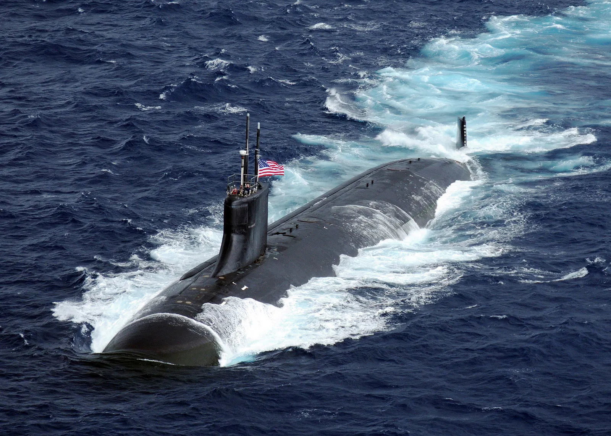